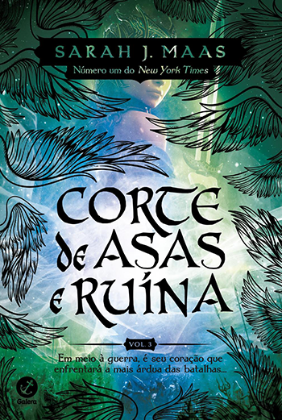

Sinopse Acotar
A vida de Feyre é marcada pela luta pela sobrevivência. Ela caça na floresta para sustentar sua família, enquanto suas irmãs vivem em um mundo de fantasia, alheias aos perigos que a cercam. Um dia, durante uma caçada, Feyre mata um lobo que se revela ser um servo da Corte Primaveril, uma das sete Cortes feéricas. Esse ato rompe um antigo Tratado e coloca a vida de Feyre em risco.
Ler mais
Sinopse Acomaf
Após os eventos de Corte de Espinhos e Rosas, Feyre está tentando se ajustar à sua nova vida na Corte Primaveril. No entanto, sua jornada está longe de terminar. Quando Feyre é resgatada por Rhysand, o Grão-Senhor da Corte Noturna, a história toma um rumo surpreendente. Ela é levada para a Corte Noturna, onde descobre que há muito mais acontecendo do que ela imaginava.
Ler mais

Sinopse Acowar
Feyre Archeon, após suportar fome, frio e desesperança, atravessou a Montanha e foi Sob a Montanha. Ela reclamou seu amor, quebrou a maldição e livrou o povo feérico da terrível ameaça de Amarantha. No entanto, o rei de Hybern agora pretende usar o Caldeirão para moldar um novo tempo, uma época de trevas e escravidão. A guerra se aproxima, um conflito que promete devastar Prythian.
Ler mais